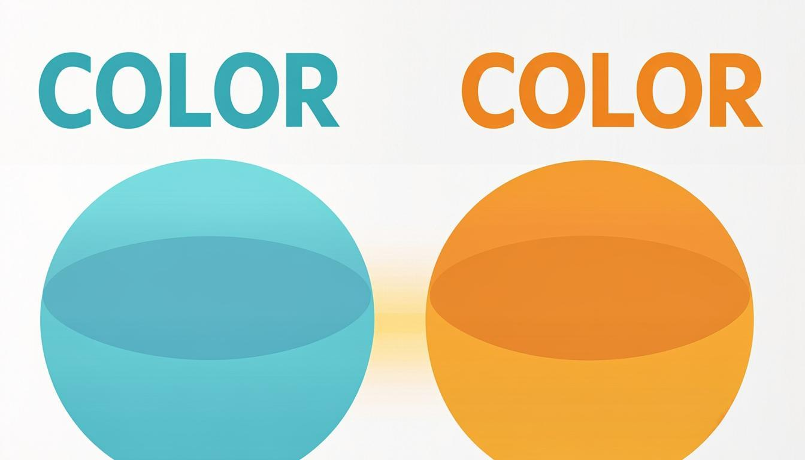

برابری، زیرمجموعه، قاعدهٔ طلایی 2ⁿ و مجموعههای N و W و Z و Q با نمایش مشخصهای

برابری مجموعهها، زیرمجموعهها و قاعدهٔ طلایی 2ⁿ؛ آشنایی با مجموعههای N و W و Z و Q و هنر نمایش مجموعهها با نمادهای ریاضی — با ۸ مثال حلشدهٔ گامبهگام
زیرمجموعههاقاعدهٔ 2ⁿ۶ مثال حلشدهبرنامهٔ مرور
کتابهای درسی پایه نهم · سال ۱۴۰۵–۱۴۰۶منبع: chap.sch.ir
🎯 اهداف یادگیری
برابری دو مجموعه را تشخیص داده و با دلیل بیان کنید.
زیرمجموعه بودن را با نماد ⊆ بنویسید و با نمودار ون نشان دهید.
همهٔ زیرمجموعههای یک مجموعهٔ کوچک را فهرست و تعدادشان را با قاعدهٔ 2ⁿ حساب کنید.
مجموعههای N و W و Z و Q را بشناسید و رابطهٔ زیرمجموعهای آنها را بنویسید.
مجموعهها را با نمایش مشخصهای (نمادهای ریاضی) بنویسید و برعکس، به عضوها تبدیل کنید.
🧭 پیشنیازها
مفهوم مجموعه، عضو و نمایش آکولادی (درس ۱)
نمادهای ∈ و ∉ و مجموعهٔ تهی ∅
عددهای طبیعی، حسابی، صحیح و گویا از پایههای قبل
دو مجموعهٔ برابر: عضوهای یکسان با چیدمان متفاوت — برابری به ترتیب نیست، به عضوهاست
۱) مجموعههای برابر؛ چه زمانی A = B است؟
دو مجموعه را وقتی «برابر» میگوییم که عضوهایشان دقیقاً یکی باشد؛ یعنی هر عضو A عضو B هم باشد و برعکس. اگر حتی یک عضو در یکی باشد که در دیگری نیست، دو مجموعه نابرابرند (A ≠ B). این تعریف دو نتیجهٔ مهم دارد: ترتیب نوشتن عضوها بیاهمیت است و تکرار مجاز نیست؛ چون در مجموعه عضو تکراری وجود ندارد.
✏️ مثال ۱ — مقایسهٔ دو مجموعه
A = {8,9,10} و B = {7,8,9} داده شده است. این دو مجموعه برابرند؟
حل گامبهگام:
خیر؛ A ≠ B است، زیرا عضو ۱۰ در A هست اما در B نیست و عضو ۷ در B هست که در A نیست. هر دو از عددهای متوالی ساخته شدهاند اما عضوهایشان یکی نیست.
✏️ مثال ۲ — ساختن مجموعه با شرط میانگین
مجموعهای سهعضوی از عددهای طبیعی متوالی بسازید که میانگین عضوهایش ۹ باشد و آن را با مجموعهٔ {9,10,8} مقایسه کنید.
حل گامبهگام:
اعداد متوالی با میانگین ۹: {8, 9, 10} (میانگین = عدد وسطی). این مجموعه با {9,10,8} برابر است چون عضوهایشان یکی است؛ صرفاً ترتیب نوشتن فرق دارد.
حالا اگر بخواهیم مجموعهٔ B شامل سه زوج متوالی با میانگین ۴ باشد: {2,4,6}؛ دو مجموعهٔ A = {2,4,6} و B برابرند.
⚠️ خطای رایج
برابری را از شباهت ظاهری تشخیص ندهید! {1,2,3} و {3,2,1} و {2,1,3} هر سه یک مجموعهاند؛ اما {1,2,3} با {1,2,3,4} برابر نیست. همیشه عضوها را عضو به عضو بسنجید.
۲) زیرمجموعه؛ وقتی یک مجموعه درون دیگری است
اگر هر عضو مجموعهٔ D، عضو مجموعهٔ B هم باشد، میگوییم D زیرمجموعهٔ B است و مینویسیم D ⊆ B. مثلاً اگر B = {1,2,3,4} و D = {2,4}، آنگاه D ⊆ B. برای بررسی زیرمجموعه بودن، عضو به عضو میگردیم: اگر عضوی در D یافت شود که در B نیست، رابطه نادرست است.
زیرمجموعه: دایرهٔ کوچک کامل درون دایرهٔ بزرگ — هر عضو D عضو B هم هست
✏️ مثال ۳ — بررسی روابط زیرمجموعهای
A = {1,3,6,4} و B = {5,1,3} و C = {2,5,1,3,6}. درستی/nادرستی را با دلیل مشخص کنید: B ⊆ C؟ A ⊆ B؟ {5,6} ⊆ C؟
حل گامبهگام:
B ⊆ C درست است؛ ۵ و ۱ و ۳ همگی در C هستند.
A ⊆ B نادرست است؛ عضو ۶ (و ۴) در A هست اما در B نیست.
{5,6} ⊆ C درست است؛ هر دو عضو در C = {2,5,1,3,6} موجودند.
سه حقیقت همیشگی زیرمجموعهها
هر مجموعه زیرمجموعهٔ خودش است: A ⊆ A (چون تمام عضوهای A در خودش هست).
مجموعهٔ تهی زیرمجموعهٔ هر مجموعه است: ∅ ⊆ A؛ حتی ∅ ⊆ ∅.
A ⊆ B و B ⊆ A همزمان برقرار باشند، نتیجه میشود A = B (و برعکس).
⚠️ خطای رایج
دو اشتباه پرتکرار امتحان: ۱) نوشتن ∅ ∈ A بهجای ∅ ⊆ A؛ ∅ عضوِ یک مجموعه نیست مگر عمداً داخل آن گذاشته شده باشد مثل {∅}. ۲) نوشتن عدد بهعنوان زیرمجموعه: «۳ ⊆ B» غلط است؛ درستش «۳ ∈ B» یا «{3} ⊆ B».
۳) فهرست و شمارش زیرمجموعهها؛ قاعدهٔ 2ⁿ
برای نوشتن «همهٔ» زیرمجموعههای یک مجموعه، نظم مهم است: اول ∅، بعد تکعضویها، بعد دو عضویها و در آخر خود مجموعه. مثال کتاب: زیرمجموعههای {a,b,c} عبارتاند از ∅، {a}، {b}، {c}، {a,b}، {a,c}، {b,c} و {a,b,c}؛ جمعاً ۸ مورد.
🚀 ترفند طلایی
قاعدهٔ طلایی: مجموعهای با n عضو دقیقاً 2ⁿ زیرمجموعه دارد. چرا؟ هر عضو در ساختن یک زیرمجموعه دو انتخاب دارد: «بیا» یا «نیا»؛ پس برای n عضو ۲×۲×…×۲ = 2ⁿ حالت داریم. اگر سؤال «زیرمجموعههای دقیق» (بهجز خود مجموعه) باشد: 2ⁿ − 1.
تعداد عضو n
همهٔ زیرمجموعهها 2ⁿ
زیرمجموعههای دقیق 2ⁿ−۱
نمونهٔ شمارش
۰ (∅)
۱
۰
فقط ∅
۱
۲
۱
∅ و خودش
۲
۴
۳
∅ ، دو تکعضوی، خودش
۳
۸
۷
مانند {a,b,c}
۴
۱۶
۱۵
مثل {a,b,c,d}
✏️ مثال ۴ — همهٔ زیرمجموعههای یک مجموعهٔ چهارعضوی
همهٔ زیرمجموعههای {a,b,c,d} را بنویسید و بشمارید.
جملهٔ «تعداد زیرمجموعههای مجموعهٔ تهی یک است» کاملاً درست است؛ ∅ فقط یک زیرمجموعه دارد که خودش است. همین جمله در امتحانهای هماهنگ بارها سؤال شده است.
۴) مجموعههای عددی شاخص و نمایش با نماد
تاکنون مجموعهها را با عضوها و نمودار ون میشناختیم. روش قدرتمند بعدی استفاده از «نمادهای ریاضی» است. مجموعههای معروف زیر را حفظ باشید:
نماد
نام
عضوها
رابطهها
N
عددهای طبیعی
{1, 2, 3, 4, 5, …}
N ⊂ W
W
عددهای حسابی
{0, 1, 2, 3, …}
W ⊂ Z
Z
عددهای صحیح
{…, −3, −2, −1, 0, 1, 2, 3, …}
Z ⊂ Q
Q
عددهای گویا
همهٔ کسرهای a/b با b ≠ 0
شامل هر چهار گروه
پس زنجیرهٔ زیرمجموعهای مهم فصل را داریم: N ⊂ W ⊂ Z ⊂ Q؛ هر عدد طبیعی حسابی است، هر عدد حسابی صحیح است و هر عدد صحیح گویاست (چون مثل 5 = 5/1 قابل کسرنویسی است). برعکس هر یک، نادرست است؛ مثلاً 1/2 گویاست ولی حسابی نیست.
زنجیرهٔ زیرمجموعهای عددها: N درون W درون Z درون Q
✏️ مثال ۵ — خواندن نمایش مشخصهای
این مجموعهها را با عضوها بنویسید: الف) A = {n+3 | n∈N} ب) B = {x | x∈Z , −5 ≤ x ≤ −1}
حل گامبهگام:
الف) بهجای n عددهای طبیعی ۱،۲،۳،… را میگذاریم: 4، 5، 6، 7، … پس A = {4, 5, 6, 7, …} (مجموعهای نامتناهی از عددهای بزرگتر از ۳).
ب) عددهای صحیح از −۵ تا −۱: B = {−5, −4, −3, −2, −1}.
✏️ مثال ۶ — مقایسهٔ سه مجموعهٔ شرطی
A = {−2,−1,0,1,2} و B = {x | x∈A , x² ≤ 2} و C = {x | x∈A , −1 ≤ x ≤ 1} و D = {x | x∈A , x⁴ = 1}. کدامیک برابرند؟
حل گامبهگام:
B: مربع ≤ ۲ یعنی x ∈ {−1, 0, 1} چون 2² = 4 > 2. C = {−1, 0, 1}. D: توان چهارم ۱ ⇒ x = ±1 ⇒ D = {−1, 1}.
نتیجه: B = C (برابر) و D زیرمجموعهٔ هر دو است. همچنین A ⊆ B نادرست است.
🎓 راهنمای تدریس (معلم و اولیا)
پیشنهاد تدریس ۴ جلسهای: جلسهٔ ۱ برابری با بازی «کارتهای عددی همارز» (دو گروه مجموعه بسازند و برابری را با دلیل اعلام کنند)؛ جلسهٔ ۲ زیرمجموعه با شکلهای تو در تو و کشیدن دایرهها روی تخته؛ جلسهٔ ۳ بازی «۲ به توان n» با شمردن زیرمجموعههای دستههای واقعی کلاس؛ جلسهٔ ۴ نمایش مشخصهای با جدول تبدیل دوطرفه (آکولادی ↔ مشخصهای). در پایان هر جلسه یک خطای رایج را بازگو کنید.
۵) اشتباههای رایج این درس
⚠️ خطای رایج
در سؤالهای درست/نادرست، «∅ ∈ A» را با «∅ ⊆ A» قاطی نکنید: دومین همیشه درست و اولی معمولاً نادرست است.
⚠️ خطای رایج
«۳ ⊆ B» نادرستنویسی است؛ عدد با مجموعه مقایسه نمیشود. شکل درست: «3 ∈ B» یا «{3} ⊆ B».
⚠️ خطای رایج
در نمایش مشخصهای، دامنه (N یا Z یا Q) را نبینید و مستقیم شرط را حل نکنید؛ جوابها کاملاً متفاوت میشوند.
⚠️ خطای رایج
مجموعهٔ تهی را با {0} اشتباه نگیرید؛ {0} یک عضو (عدد صفر) دارد و تهی نیست.
۶) کاربرد در زندگی؛ چرا اینها را یاد میگیریم؟
زیرمجموعهها در همهٔ دستهبندیهای واقعی هستند: «کتابهای علمی کتابخانه» زیرمجموعهٔ «همهٔ کتابها»، «دانشآموزان تیم علمی» زیرمجموعهٔ «دانشآموزان مدرسه». نمایش مشخصهای هم دقیقاً همان زبانی است که در بانکهای اطلاعاتی و جستوجوی اینترنتی به کار میرود: «همهٔ فیلمهایی که ژانر ماجراجویی دارند و پس از ۱۴۰۰ ساخته شدهاند» یک مجموعهٔ مشخصهای است! کدنویسی رایانه هم پر از مجموعه است؛ دستور فیلتر در هر برنامهٔ کاربردی همان تبدیل شرط به مجموعه است.
۷) برنامهٔ مرور هفتگی این درس
روز
کار مرور (۱۵ دقیقه)
ابزار همین بسته
شنبه
بازخوانی تعریف برابری + ۳ مثال
کاردکسهای درس ۲
یکشنبه
فهرستکردن زیرمجموعههای ۳ مجموعه
کاردکس قاعدهٔ 2ⁿ
دوشنبه
تبدیل ۵ نمایش مشخصهای به آکولادی
نمونه سوال شمارهٔ ۱ و ۷
سهشنبه
حل ۶ تست چهارگزینهای
آزمون چهارگزینهای
چهارشنبه
مرور خطاهای رایج + اصلاح
بخش اشتباههای رایج
پنجشنبه
حل سؤالهای نهایی بدون نگاه به پاسخ
بانک سوالات + پاسخنامه
جمعه
تدریس یک بخش به خانواده
همهٔ فایلهای فصل ۱
📌 جمعبندی
A = B یعنی عضوهای دقیقاً یکسان؛ ترتیب مهم نیست.
A ⊆ B یعنی هر عضو A عضو B هم هست؛ ∅ و خودِ A همیشه زیرمجموعهاند.
مجموعهٔ n عضوی دقیقاً 2ⁿ و دقیقاً 2ⁿ−۱ زیرمجموعهٔ دقیق دارد.
زنجیرهٔ عددها: N ⊂ W ⊂ Z ⊂ Q.
نمایش مشخصهای = نوشتن شرط عضویت؛ دامنه را اول ببینید.
یادگیری سفر است؛ هر تمرین، یک گام تا تسلط.
این جزوه بر پایهٔ کتاب درسی رسمی پایه نهم (سازمان پژوهش و برنامهریزی آموزشی، سال ۱۴۰۵–۱۴۰۶) تهیه شده است. موفق باشید! 🌟